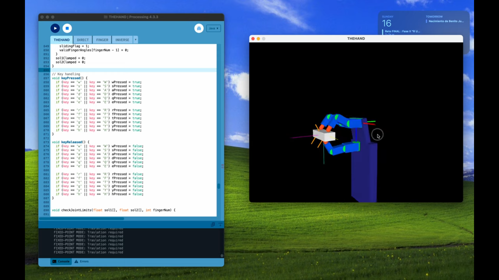
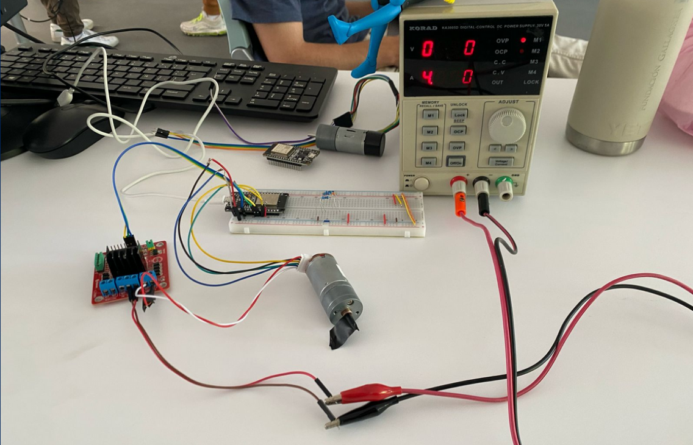
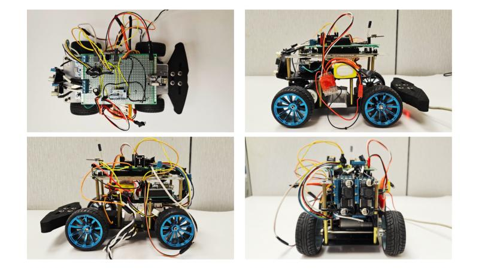
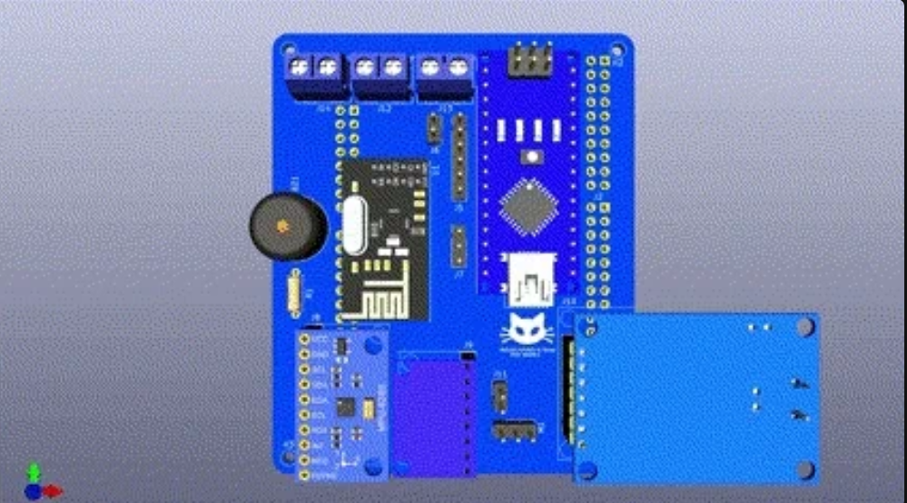
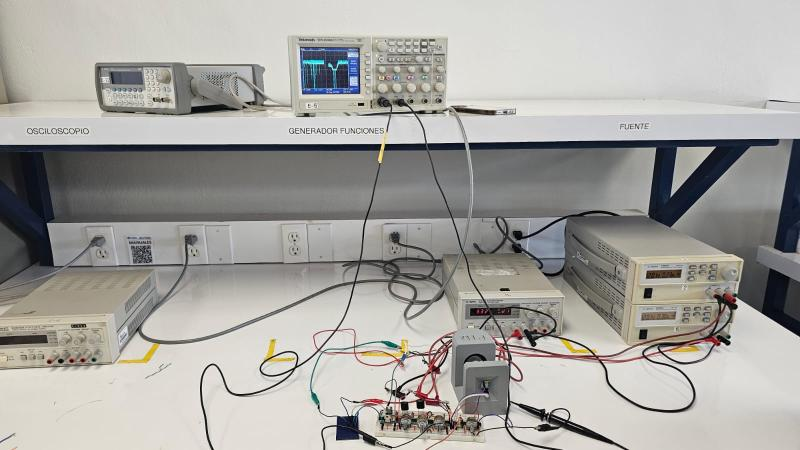
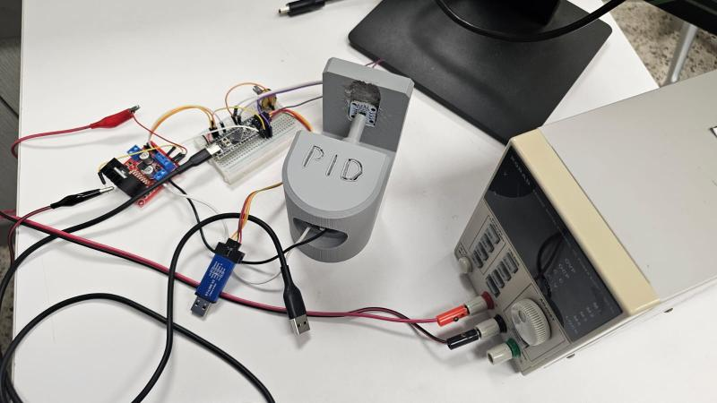

I'm a third-year Robotics & Digital Systems student at Tecnológico de Monterrey. I am currently developing an autonomous navigation, control system, and computer vision based differential drive robot project with Manchester Robotics Ltd., a software and electronics member of the Unmanned Surface Vehicle project at VantTec, a service Intern at Multi-Robotic Systems Laboratory and currently learning about and developing autonomous navigation, control systems, computer vision, and AI projects.

Final project of the Kinematics module for dexterous manipulation in a three-fingered robotic hand with 9 D.O.F.

Main project for the undergraduate course "Robotics Fundamentals" which applies Digital Control System Design, ROS2 Interfacing, micro-ROS, and Experimental Mathematical Model Coefficients Determination and Controller Performance Validation. This project was made in collaboration with Manchester Robotics Ltd. as a training partner. The project aimed to precisely control the velocity of a DC motor.


Main project of the undergraduate course "Design of Advanced Embedded Systems" which implements Design and Analysis of Algorithms, Digital Signal Processing, Shared-Memory Architecture, and Communication Interfaces. This project was made in collaboration with John Deere as a training partner.

This project applied Classic/Modern Control Theory, Temporal Analysis, Computerized Control, and System Identification to regulate a DC motor's shaft position using an Analog PID Controller.

This project applied Classic/Modern Control Theory, Temporal Analysis, Computerized Control, and System Identification to regulate a DC motor's shaft position using a Digital PID Controller.
Download my latest CV for more details about my education, experience, and technical skills.
Download ResumeEmail: ruloco@example.com
GitHub: github.com/yourusername
LinkedIn: linkedin.com/in/yourusername
{kind=link}